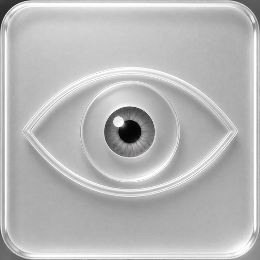
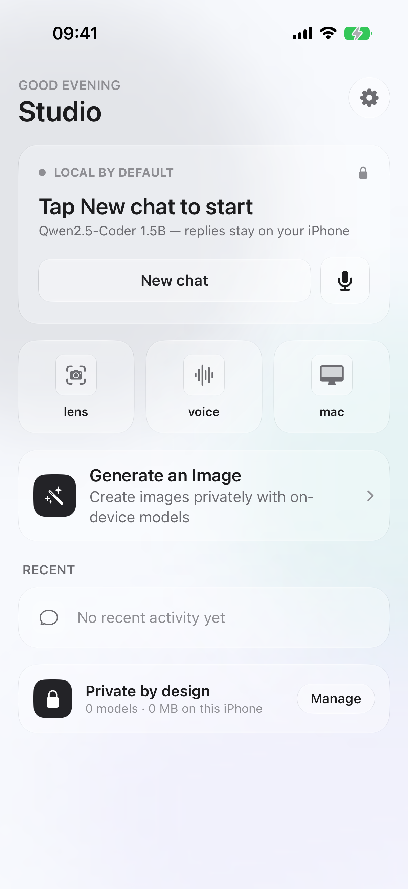

Make the model state visible.
Load, pause, and continue with a clear view of what is happening on-device.

OnDevice LLM OnDevice LLM / 3.2.7Private intelligence, without the relay
OnDevice LLM brings chat, vision, voice, and model control to iPhone — designed as a calm, capable glass surface for OnDevice LLM.

Chat with downloaded models, inspect code through Lens, speak without a cloud round-trip, and keep the whole loop visible. OnDevice LLM stays quiet so the work can be loud.
Fresh captures from the current OnDevice LLM workspace, set to Dark in the app. Tap any frame for a larger view.
Load, pause, and continue with a clear view of what is happening on-device.
Vision, OCR, and imported frames stay in the same local workflow.
Local speech tools with a library that feels like part of the studio.
Model families, memory fit, download state, and role — all in one surface.
Captured on iOS Simulator in Dark appearance. Lens reflects the simulator’s unavailable-camera state; no legacy captures are used.
OnDevice LLM supports five local model types, each with a focused surface for creating, understanding, speaking, and keeping intelligence close to the device.
Create images locally with generation models selected for your device.
IMAGE / DIFFUSIONCode, explain, review, and plan with models stored on your device.
TEXT / LLMInspect images, scan code, and ask about what you see without a cloud relay.
VISION / OCRKeep dictation, transcription, and spoken replies in the same local loop.
SPEECH / TTSRun compact embedded intelligence inside the app experience, close to the task.
EMBEDDED / LOCALA launch-promo view of the surfaces, boundaries, and model runs that make OnDevice LLM useful.
| Surface | What it unlocks | Where it runs | Signal |
|---|---|---|---|
| Assistant | Chat, code review, explanations, and feature planning | Downloaded local models | LOCAL |
| Lens | Camera frames, OCR, imported photos, and visual questions | Vision + fallback OCR | ON-DEVICE |
| Voice | Dictation, voice conversations, and spoken replies | Speech + local TTS | PRIVATE |
| Models | Search, fit, download, and manage model families | Hugging Face on request | EXPLICIT |
| Mac | Pairing and a larger local workspace | Trusted LAN, opt-in | PAIRED |
Runs across most current model families, with availability governed by device memory, thermal headroom, model license, and selected quantization.
“The best AI tool is the one that leaves the room with you.”
— CODELENS / PRODUCT NOTEThe device IPA has verified app and share-extension entitlements. Your installer must re-sign it with a profile that authorizes the requested capabilities. The Home preview is current; other previews illustrate earlier builds. Physical-device runtime validation remains open.
OnDevice LLM
iOS 26.5 SDK · iOS 18+ · ad-hoc re-signer asset